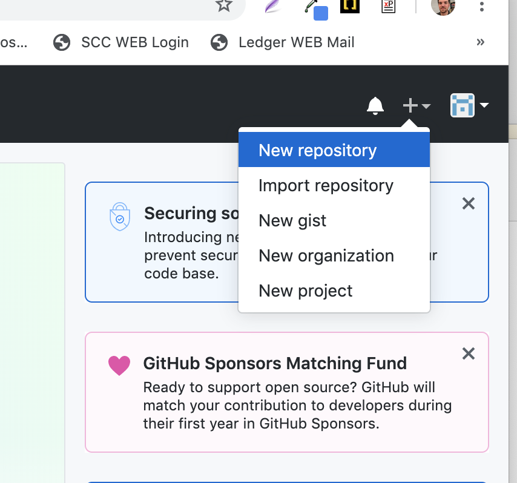
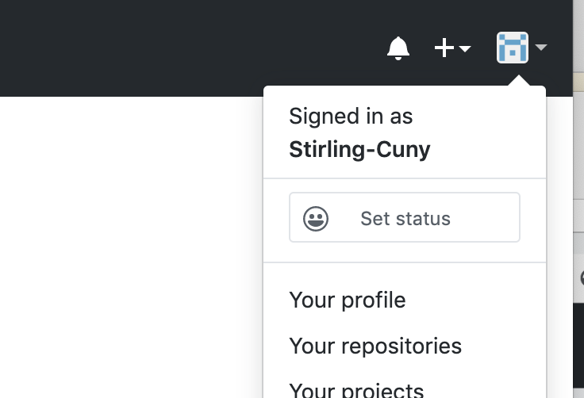
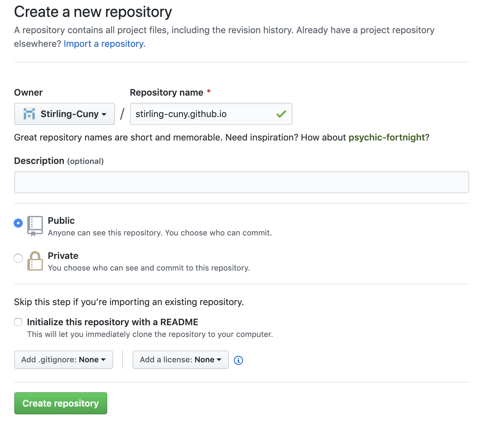
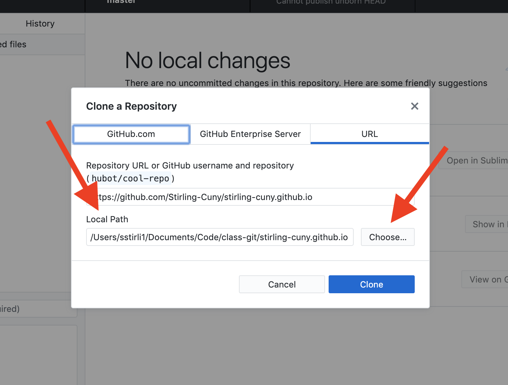
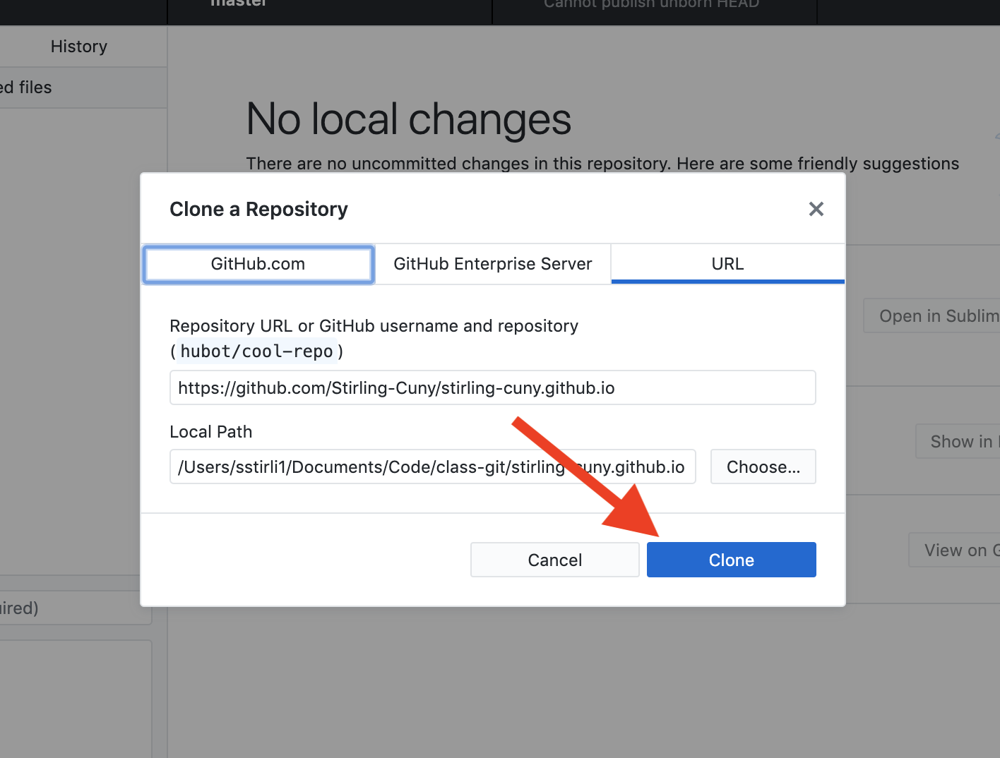
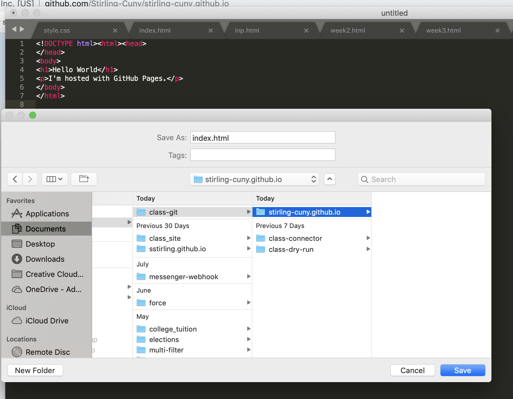
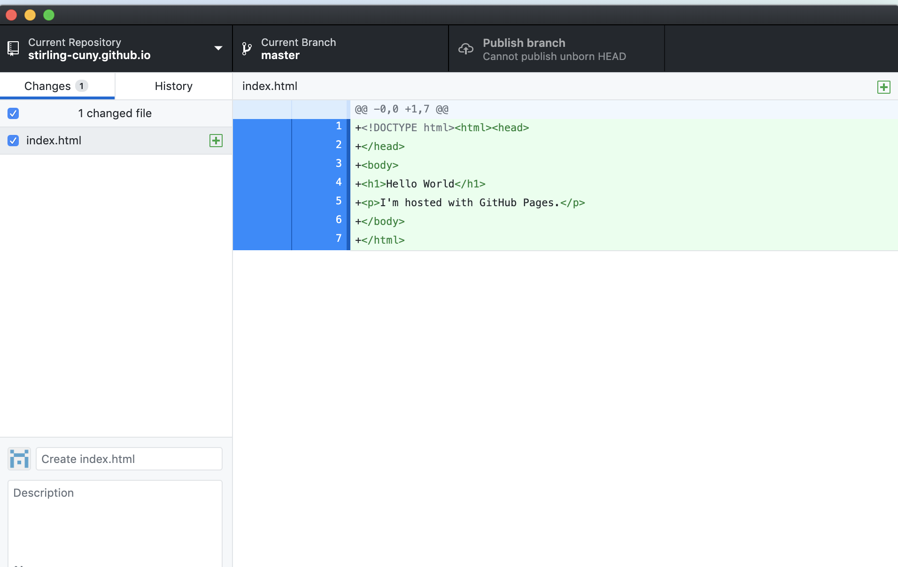
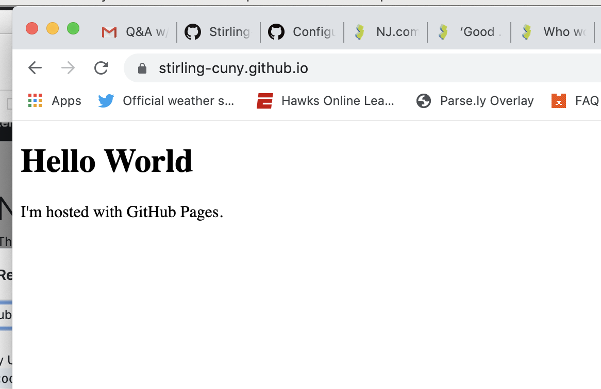

# Publishing your own website
This is an addendum to the week 3 class.
** First things first. If you went through this process in class and got stuck, I'm going to recommend you go scorched Earth.
That means:
* Delete every folder on your computer called "Github"
* Go into your Github account and delete all existing repositories, if there are any.
We want to start fresh **
## Things you'll need to do this
1. A Github account
2. To download Github Desktop
# Setting up Github
We'll need to do two things before we can really get into Github:
1. Authenticate Github to your account (essentially connect the two)
2. Configure it to work with your computer.
## Authentication.
[Follow this link](https://help.github.com/en/desktop/getting-started-with-github-desktop/authenticating-to-github) to go through the steps of authenticating.
You may find that you're already signed in and connected, if so, great! You do not have to worry about any of the instructions for Github Enterprise.
## Configuring
[Follow this link](https://help.github.com/en/desktop/getting-started-with-github-desktop/configuring-git-for-github-desktop) for instructions on configuring Git to your computer
**This are installation steps that you should not have to complete again.** <br>
<br>
## Let's make a webpage!
So now we know enough to make and publish our first web page! We'll do this using Github Pages.
Start by going to Github.com and creating a new repository. If you don't see the prompt initially, you can click the plus sign in the top left.
<br>

<br>
### **This repository must be called `YourUserName.github.io`**
### Specifically, it must be exactly the same as the user name on your Github page. If you're not sure of it, click the icon in the very top right of the screen and see what shows up where it says 'signed in as'
<br>

<br>
### Here's what mine looks like:
### It should be public, and don't worry about the license or "gitignore" right now. Just click create repository.
<br>

<br>
### When you get the prompt, click "set up in desktop"
<br>
<img src="assets/Desktop.png"frameborder="1px" width="60%" height="400px">
<br>
### This should give you a prompt in Github Desktop. This is where you can choose where to store the files on your computer.
Select "Choose" under Local Path" to tell Github where to put it.
<br>

<br>
### Then, all you want to do is click "clone."
<br>

<br>
### Great. Now open up Sublime and create a new file.
### To make things easy, just copy and paste this basic code into the file
```
<!DOCTYPE html><html><head>
</head>
<body>
<h1>Hello World</h1>
<p>I'm hosted with GitHub Pages.</p>
</body>
</html>
```
### Save it as `index.html` in the folder titled `YourUserName.github.io` This folder will be whever you told your computer to put it in the steps above.
<br>

<br>
### Once you've saved it, go back to your Github Desktop. You should see the index file now in your repository.
<br>

<br>
### Write a description/summary of what you did ("First commit" is the most common starter.)
### Press commit to master, then "publish branch" in the upper right.

### Finally, open a browser and go to `YourUserName.github.io`
<br>

<br>
### Because if it does, OMG! You just published a website.
<img src="https://cultofthepartyparrot.com/parrots/hd/parrot.gif"frameborder="1px" width="30%">
<br>
### If not, call/text/email/slack me, and feel free to yell at me. We'll figure it out in class.
### I'll be in room 430 at 5:30 p.m. on Thursday, Sept. 26, if you want to troubleshoot/review.